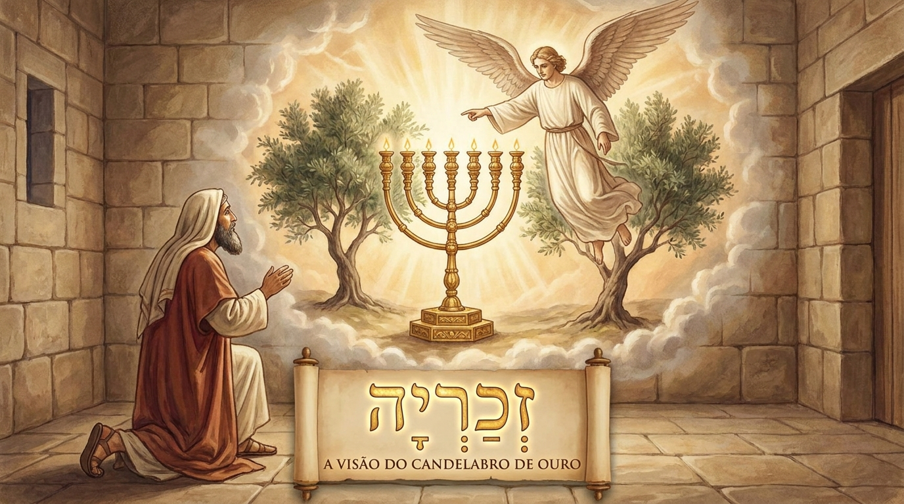

Visões de Esperança e o Rei Vindouro
Zacarias traz uma das mensagens mais ricas e visuais do Antigo Testamento. Escrevendo para o povo que retornou do exílio, o profeta usa uma série de visões enigmáticas para garantir aos judeus que Deus não havia abandonado a Sua aliança e que Ele estava, de fato, trabalhando para restaurar Jerusalém. Mais do que apenas encorajar a reconstrução do Templo, Zacarias aponta para um futuro glorioso, onde o verdadeiro Rei e Messias governaria com justiça e paz, trazendo salvação a todas as nações.
Ficha Técnica
- Autor: O profeta Zacarias.
- Tema Principal: O encorajamento para a obra de Deus, a soberania divina sobre a história e as profecias sobre a vinda do Messias.
- Versículo-Chave: "Alegra-te muito, ó filha de Sião; exulta, ó filha de Jerusalém; eis que o teu rei virá a ti, ele é justo, e traz a salvação, humilde, e montado sobre um jumento, sobre um jumentinho, filho de jumenta." (Zacarias 9:9)
Estrutura
- Oito visões noturnas de restauração e esperança (Caps. 1-6)
- A questão do jejum e a promessa de bênção para Jerusalém (Caps. 7-8)
- Profecias sobre as nações vizinhas, o Messias e o dia do triunfo final (Caps. 9-14)